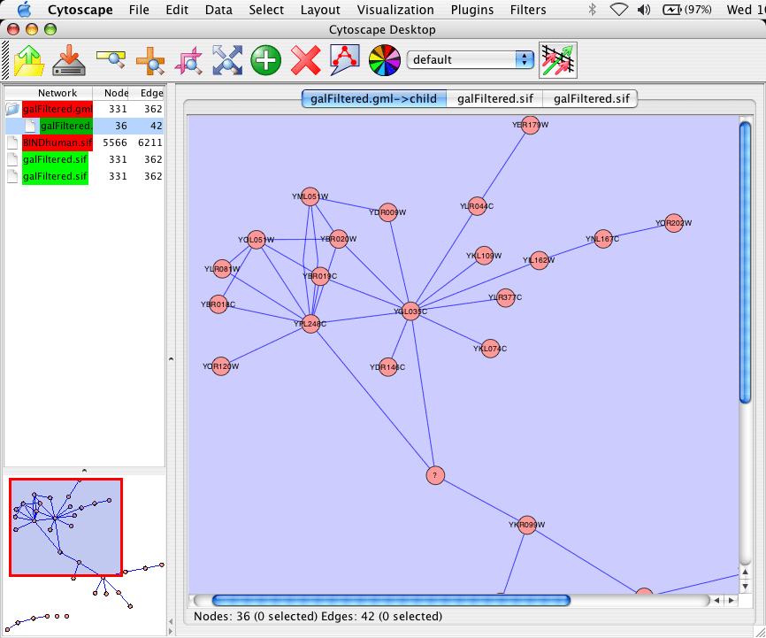

The main window here has several components:
The network management and attribute browser panels are dockable tabbed panels known as CytoPanels. You can undock any of these panels by clicking on the Float Window control in the upper-right corner of the CytoPanel.

If you select this control, e.g. on the attribute browser panel, you will now have two Cytoscape windows, the main window, and a new window labeled CytoPanel 2, similar to the one shown below.

Note that CytoPanel 2 now has a Dock Window control. If you select this control, the window will dock onto the main window.
Cytoscape also has a set of editors that enable you to build and modify networks interactively by dragging and dropping nodes and edges from a palette onto the main network view window. The editors can be invoked using the Set Editor command on the File menu. An example of a simple biomolecule editor, with the palette contained in CytoPanel 1, is shown below.


The File menu contains most basic file functionality: File / Load for loading a variety of file types; File / Save for saving. File/Help displays a credits screen. File / Print allows printing. File / Export As... allows you to export to a file in a number of graphics formats (such as PDF). File / Exit closes all windows of Cytoscape and exits the program. File/New opens up a New network for editing. This menu item is disabled until an editor is chosen using the File /SetEditor menu item.

The
Edit menu Undo and Redo menu items which undo and redo edits made in
the Attribute Browser. The menu also contains a Squiggle feature that enables you
to mark up your network. This can be particularly useful during live presentations.
There are also options for creating and destroying views (graphical representations of a
network) and networks (the network data – not yet visualized), as well as an option for
deleting selected nodes and edges from the current network. All deleted nodes and edges
can be restored to the network via the Edit/Restore Deleted Nodes/Edges menu item.
The Edit Menu also supports Preferences editing for properties and plug-ins via a
Preferences Dialog. Preferences editing operates on the cytoscape.props file associated
with the user’s instance of Cytoscape. See "Command Line Arguments and Properties" for more
information.

The Data menu allows you to display or hide the network management panel (CytoPanel 1). It allows you to display or hide the attribute browser (CytoPanel 2), which lets you view and edit attributes assigned to both nodes and edges. (See section 7. Node and Edge Attributes) The Data menu allows you to display an advanced window (contents of CytoPanel 3).

The Select menu contains methods and operations for selecting nodes and edges, and using the current selection to create a new network and an associated view.

The Layout menu has an array of features for organizing the network visually according to one of several algorithms, aligning and rotating groups of nodes, and adjusting the size of the network. Most of these features are available from plugins that are packaged with Cytoscape 2.2

The Visualization menu provides options for changing the mapping from biological data to a visual representation: colors of nodes, thickness of edges, etc. These features are explored in-depth in the 9. Visual Styles section. This menu also provides an Overview of your entire network, which is helpful for navigating very large networks.

The PlugIns
menu has menu items or choices added by plugins that have been
loaded, such as "Import BioPAX Document from file".
Note:
A list of available Cytoscape PlugIns with
descriptions is available online at: http://cytoscape.org/plugins2.php
 CytoPanels are floatable / dockable panels which cut down on the number of pop-up
windows within Cytoscape. The CytoPanels menu allows you to show or hide
CytoPanel 1, CytoPanel 2, or CytoPanel 3 based on the menu item selected.
CytoPanels are floatable / dockable panels which cut down on the number of pop-up
windows within Cytoscape. The CytoPanels menu allows you to show or hide
CytoPanel 1, CytoPanel 2, or CytoPanel 3 based on the menu item selected.
Note:
In order for these keyboard short-cuts to work, the Cytoscape Desktop Window needs to have the focus. To give the window focus, simply click on it.


Additional menus may appear, depending on the set of Plugins you have chosen to load.
